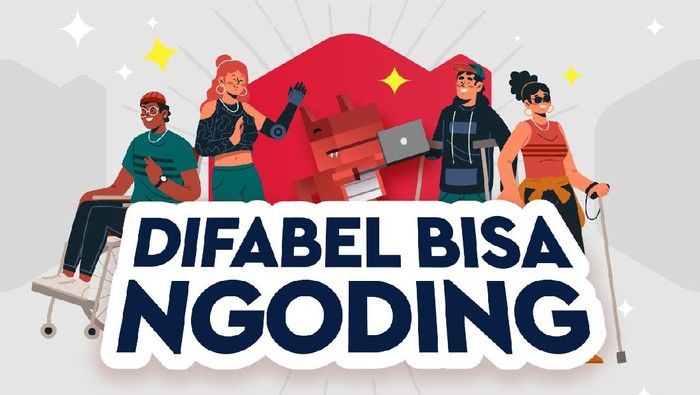

Skilvul Bagi-bagi Beasiswa Bootcamp Coding untuk Difabel
Skilvul mengatakan dua program tersebut memberikan kesempatan bagi mahasiswa Teknologi Informasi (TI) maupun non-TI dari seluruh Indonesia untuk terjun secara langsung.
Read More
Skilvul Gelar Pembekalan Keterampilan Digital Bagi 1.100 Mahasiswa
Platform teknologi pendidikan Skilvul mengadakan Program Magang Bersertifikat bagi mahasiswa yaitu Skilvul Virtual Internship UI/UX Challenge, dan Program Studi Independen Bersertifikat, Skilvul #Tech4Impact.
Read More
Kenalan dengan Marcel Lulusan Skilvul #Tech4Impact
Akibat kemiskinan struktural, sebanyak 22% remaja Indonesia yang berusia 15-24 tahun kehilangan kesempatan untuk mengembangkan potensi diri. Meskipun berbagai tantangan dihadapi, hal itu tidak menyurutkan semangat Marcel untuk terus menggali potensi diri.
Read MoreRaih Pekerjaan Impian di Tengah Keterbatasan Fisik
Keterbatasan memunculkan stigma terhadap kelompok difabel, namun menjadi individu dengan disabilitas tidak menjadikan Dolos putus asa dengan keterbatasan untuk meraih pekerjaan impiannya.
Read MoreDari Lulusan Teknik Biomedis hingga Menjadi System Analyst dan UI/UX Designer
Berdasarkan riset Boston Consulting Group, partisipasi perempuan Indonesia pada bidang digital hanya berkisar 22%, lebih rendah dibandingkan negara lain di Asia Tenggara. Simak bagaimana Faiq mengembangkan kemampuan diri dan memulai karirnya di bidang teknologi bersama Skilvul.
Read MoreMembuat Game pakai Unity untuk Pemula
Sobat Skilvul, apakah kamu tertarik menjadi seorang game developer? Kalau iya, kamu pasti tidak asing lagi dengan Unity. Buat kamu yang masih belum tahu atau ingin mengenal lebih lanjut mengenai Unity, yuk baca artikel ini sampai akhir ya!
Read More